Ajouter des dépôts de sauvegarde¶
Résumé
Un dépôt de sauvegarde (backup repository) est l'endroit où Veeam range les fichiers de sauvegarde. Ce TP présente les différents types de dépôts, puis en met deux en place :
- le dépôt par défaut que l'appliance Veeam crée toute seule : un dépôt Linux durci et immuable (7 jours), à découvrir ;
- un second dépôt,
Depot-2-srv-fichiers, sur un nouveau disqueF:du serveur Windowssrv-fichiers, formaté en ReFS avec des clusters de 64 Ko pour profiter du fast clone.
Pour y parvenir, le serveur Windows est d'abord installé comme serveur géré grâce au kit de déploiement Veeam et à l'authentification par certificat. Le TP explique aussi, captures à l'appui, pourquoi un dépôt sur partage SMB ne fonctionne pas avec l'appliance dans un lab sans domaine Active Directory.
| Propriété | Valeur |
|---|---|
| Difficulté | Intermédiaire |
| Durée estimée | 1 h 30 (la lecture de la section 3, facultative, ajoute 10 min) |
| Version décrite | Veeam Backup & Replication 13.1.2.57 (appliance Linux), Windows Server 2025 |
| Place dans le parcours | Partie 4 sur 7 du parcours Veeam Backup & Replication |
| Rejoué dans le lab | 2 novembre 2026 (KVM/libvirt) |
| Dernière mise à jour | 2026-11-02 |
Convention de lecture
Chaque action précise la machine sur laquelle elle se fait :
| Repère | Machine |
|---|---|
| 🖥️ | PC hôte (hyperviseur) |
| 🌐 | Navigateur web connecté à l'interface web de l'appliance : https://192.168.19.55/ |
| 🪟 | srv-fichiers (Windows Server 2025, 192.168.19.22) |
| 📦 | Console de l'appliance vbr (écran de la VM) : inutile dans ce TP |
| 🐧 | srv-debian : inutile dans ce TP |
Les menus et les boutons sont écrits en anglais, comme ils s'affichent dans Veeam, et traduits quand c'est utile.
Objectifs¶
- Distinguer les types de dépôts de sauvegarde et savoir à quoi servent la passerelle et le serveur de montage.
- Expliquer pourquoi une deuxième copie des sauvegardes doit se trouver sur une autre machine.
- Lire les propriétés du dépôt par défaut de l'appliance et comprendre son immuabilité.
- Comprendre pourquoi un partage SMB par adresse IP échoue sur l'appliance en groupe de travail.
- Ajouter un disque à une VM Windows et le formater en ReFS avec des clusters de 64 Ko.
- Installer le kit de déploiement Veeam et déclarer un serveur Windows en serveur géré avec un certificat.
- Créer un dépôt Windows et éviter le doublon de l'assistant.
Prérequis¶
- Les parties 1 à 3 terminées : l'appliance
vbrest installée, la licence d'évaluation est en place, et vous disposez des comptes décrits dans Comptes et mots de passe. - Instantané de départ :
01-lab-pret(fin de la partie 3). En cas d'erreur, revenir à cet instantané permet de refaire cette partie proprement (voir Instantanés conseillés). - État attendu des machines :
| Machine | État | Détail |
|---|---|---|
pfsense-19 |
Allumée | Passerelle et DNS du LAN 192.168.19.0/24 |
vbr |
Allumée | 192.168.19.55, interface web accessible, connexion veeamadmin avec MFA |
srv-fichiers |
Allumée au début, éteinte pour ajouter un disque (section 4), puis rallumée | 192.168.19.22, compte Administrateur (mot de passe Popopo222@@@), Microsoft Edge disponible |
srv-debian |
Indifférente | Pas utilisée dans ce TP |
1. Comprendre les dépôts de sauvegarde¶
1.1 Qu'est-ce qu'un dépôt ?¶
Un dépôt (backup repository) est un emplacement de stockage où Veeam écrit les fichiers de sauvegarde (.vbk, .vib, .vbm, voir la partie 2). Un job de sauvegarde ne s'écrit jamais « dans le vide » : on lui désigne toujours un dépôt. Veeam surveille son état (en ligne ou non), son espace libre, et le nombre de tâches qui y écrivent en même temps.
1.2 Les types de dépôts¶
L'assistant de la console Windows regroupe les dépôts en familles. On y retrouve celles de l'interface web.
| Type | Principe | Remarque |
|---|---|---|
| Stockage à disque local (direct attached storage) | Un dossier sur un disque d'un serveur Windows ou Linux qui est un serveur géré par Veeam. Le Data Mover (le composant qui déplace les données, voir la partie 2) s'exécute sur ce serveur : c'est le cas le plus rapide. | Dépôt n° 2 de ce TP (Windows). |
| Dépôt durci (hardened repository) | Un serveur Linux dont le système de fichiers verrouille les sauvegardes contre la modification et la suppression pendant une durée donnée (immuabilité). | Le dépôt par défaut de l'appliance en est un. |
| Partage réseau (network attached storage) | Un partage SMB (Windows) ou NFS (Linux, NAS). Le stockage ne peut pas exécuter de Data Mover : une passerelle le fait à sa place. | Disponible dans la console Windows. Voir la section 3 de ce TP. |
| Appliance de déduplication | Dell Data Domain, HPE StoreOnce, etc. | Hors parcours. |
| Stockage objet | Amazon S3, Azure Blob, etc. | Voir la partie 7. |
| Veeam Data Cloud Vault | Stockage cloud proposé par Veeam. | Hors parcours. |
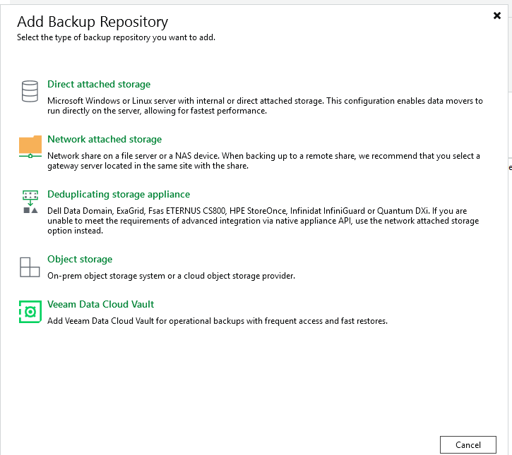
1.3 La passerelle et le serveur de montage¶
Deux autres rôles interviennent autour d'un dépôt. Ils sont décrits dans la partie 2 ; voici ce qu'il faut en retenir ici.
- Le serveur passerelle (gateway server) sert de relais pour les stockages qui ne peuvent pas exécuter de Data Mover (partages SMB et NFS, stockage objet). Il doit être proche du stockage.
- Le serveur de montage (mount server) monte le contenu d'une sauvegarde pour restaurer un fichier ou un élément d'application sans tout restaurer. L'assistant de création d'un dépôt vous demande d'en choisir un, un pour Windows et un pour Linux (section 7).
1.4 Pourquoi un second dépôt, sur une autre machine ?¶
La règle 3-2-1 demande plusieurs copies, sur plusieurs supports. Un seul dépôt, c'est un seul point de défaillance : si la machine qui l'héberge tombe en panne, brûle ou est chiffrée par un rançongiciel, toutes les sauvegardes disparaissent avec elle. Un second dépôt sur une autre machine réduit ce risque. Une seconde copie (job de copie de sauvegarde) y sera envoyée, ou on y enverra directement certaines sauvegardes.
Dans le lab, c'est un compromis
Le dépôt n° 2 vit sur srv-fichiers, qui est aussi la machine à protéger dans la partie 5. Les VM du lab partagent de plus le même PC hôte. C'est suffisant pour apprendre les assistants, mais en production, on placerait ce dépôt sur une machine distincte de celles qu'il protège, idéalement dans un autre bâtiment. Les parties suivantes précisent quel dépôt chaque job utilise.
2. Découvrir le dépôt par défaut de l'appliance (dépôt n° 1)¶
2.1 Ouvrir la liste des dépôts¶
- 🌐 Ouvrir l'interface web
https://192.168.19.55/et se connecter avecveeamadmin, le mot de passePoPoPo000@@@Labet le code MFA. - Dans le menu de gauche, ouvrir Infrastructure > Repositories. L'onglet Backup Repositories est sélectionné.
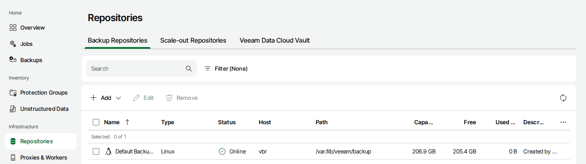
L'appliance a créé toute seule ce dépôt, Default Backup Repository, sur son second disque de 240 Go. Sa description indique « Created by Veeam Backup ». Avec l'appliance, ce premier dépôt n'est donc pas à créer : il suffit de le découvrir.
- Cliquer sur Add pour voir les types de dépôts que l'interface web sait créer.
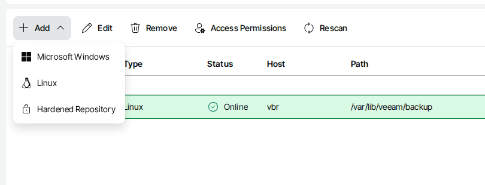
Et le SMB, le NFS, le stockage objet ?
Dans ce menu de l'interface web, version 13.1.2 du lab, aucune entrée SMB ou NFS n'apparaît : seuls les dépôts Windows, Linux et durcis sont proposés. Les partages réseau se créent dans la console Windows (entrée « Network attached storage » de la figure du 1.2). La documentation officielle indique les types disponibles pour chaque interface : une version ultérieure peut ajouter des entrées.
- Appuyer sur Esc pour fermer le menu.
2.2 Lire les propriétés du dépôt¶
- Cocher la ligne Default Backup Repository puis cliquer sur Edit.
- Cliquer deux fois sur Next pour arriver à l'étape Repository.
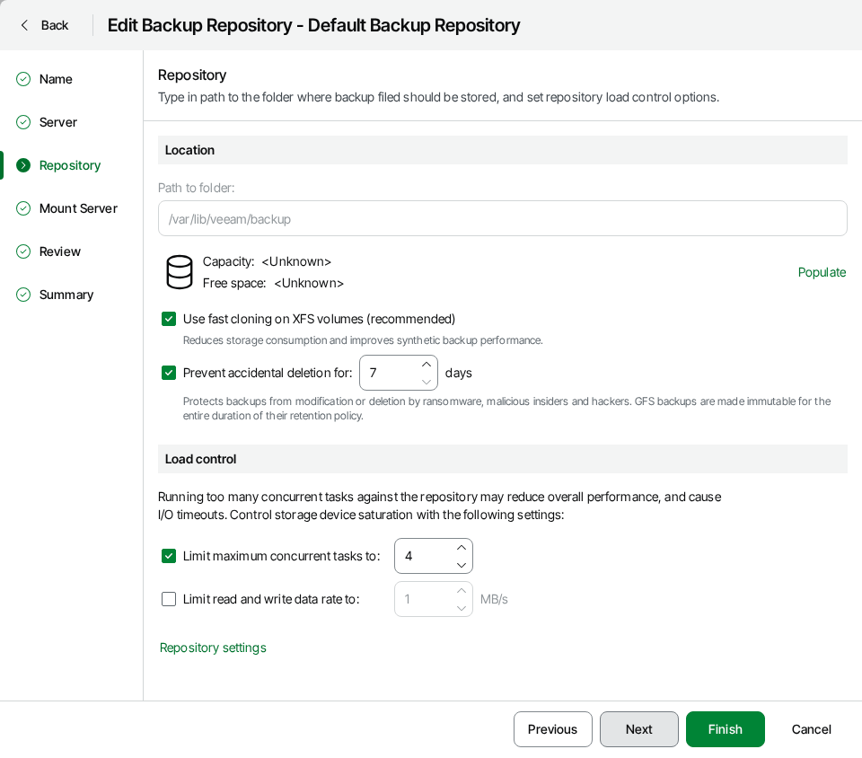
- Lire les réglages sans rien modifier, puis fermer l'assistant avec Cancel (et confirmer l'abandon si Veeam le demande). Ne pas cliquer sur Finish : rien n'est à changer ici.
Chaque réglage se comprend ainsi :
| Réglage | Valeur | Signification |
|---|---|---|
| Path to folder | /var/lib/veeam/backup |
Le dossier de l'appliance où les sauvegardes sont écrites, sur le second disque. Il est grisé : on ne le change pas. |
| Use fast cloning on XFS volumes | Coché | Active le clonage de blocs sur XFS (voir 4.2) : les sauvegardes complètes synthétiques se créent en quelques secondes et n'occupent presque pas de place en plus. |
| Prevent accidental deletion for | Coché, 7 jours | Immuabilité : pendant 7 jours, les fichiers de sauvegarde ne peuvent ni être modifiés ni être supprimés, même par un administrateur de Veeam. |
| Limit maximum concurrent tasks to | 4 | Nombre maximal de tâches qui écrivent ou lisent en même temps dans ce dépôt. Trop de tâches simultanées saturent le disque. |
Pourquoi 7 jours d'immuabilité ?
Un rançongiciel qui prend le contrôle du serveur de sauvegarde essaie d'abord de détruire les sauvegardes. Avec l'immuabilité, même avec un compte administrateur volé, les fichiers récents restent intacts pendant la durée choisie. Le principe est expliqué dans le cours : sauvegarde immuable. Ce dépôt est un dépôt durci (hardened repository), c'est-à-dire configuré pour ce rôle par l'appliance : le système est verrouillé (pas de root utilisable, SSH désactivé par défaut) et les fichiers sont protégés au niveau du système de fichiers.
Et le RAID ?
Sur un serveur Windows qui porte Veeam, on protège souvent le dépôt avec un miroir RAID 1 de deux disques : si un disque tombe en panne, l'autre contient toujours les données (voir Qu'est-ce que le RAID ?). Le RAID protège contre la panne d'un disque, pas contre une suppression, un rançongiciel ou un incendie : ce n'est pas une sauvegarde.
Avec l'appliance, la redondance des disques se règle sous l'appliance : en production, par une carte RAID du serveur ou par le stockage qui héberge les disques virtuels. Dans le lab, le second disque de vbr est un seul disque virtuel de 240 Go : aucune redondance, ce qui est acceptable pour un lab.
3. Pourquoi un partage SMB ne convient pas ici¶
Cette section se lit, elle ne se refait pas
L'idée la plus simple serait de créer le dépôt n° 2 sur un partage SMB de srv-fichiers. Cet essai a été fait dans le lab et échoue. Les captures ci-dessous montrent les messages d'erreur : les connaître évite de perdre du temps si vous tentez la même chose. Il n'y a rien à faire dans cette section ; passer directement à la section 4 pour la procédure retenue.
3.1 L'essai dans la console Windows¶
Dans la console Windows de l'appliance, lancée sur srv-fichiers, l'essai a suivi le chemin classique : Backup Infrastructure > Backup Repositories > Add Repository > Network attached storage > SMB share. Le partage \\192.168.19.22\RepoVeeam (un dossier de srv-fichiers) était désigné avec le compte local SRV-FICHIERS\Administrateur.
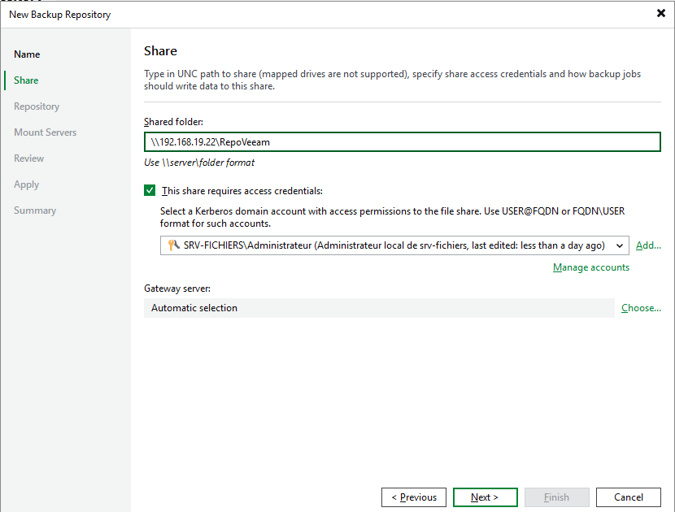
Au clic sur Next, Veeam teste l'accès et refuse :
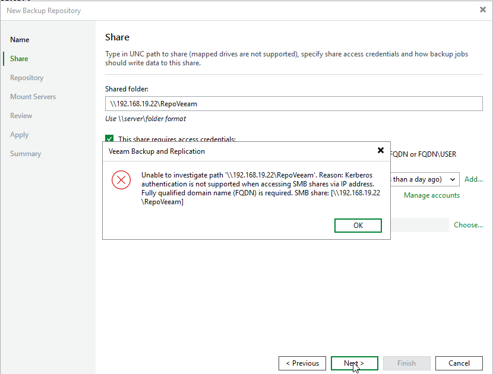
Message d'erreur
Unable to investigate path '\192.168.19.22\RepoVeeam'. Reason: Kerberos authentication is not supported when accessing SMB shares via IP address. Fully qualified domain name (FQDN) is required. SMB share: [\192.168.19.22\RepoVeeam]
3.2 L'essai avec un compte local dans l'interface web¶
Autre piste : déclarer srv-fichiers comme serveur géré avec son compte local, c'est-à-dire un identifiant et un mot de passe (l'option Connect using admin credentials de l'assistant décrit en section 6). Dans le lab, l'essai a utilisé SRV-FICHIERS\Administrateur et le mot de passe Popopo222@@@.
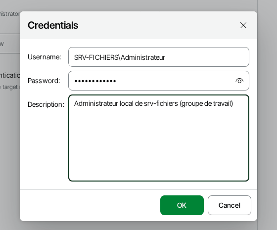
Au clic sur Next, l'appliance tente d'ouvrir une session sur srv-fichiers et échoue :
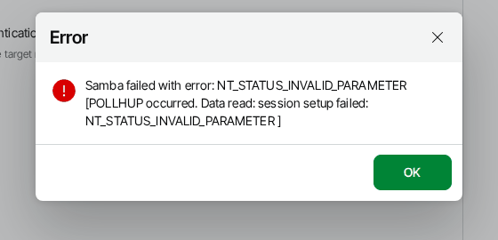
Message d'erreur
Samba failed with error: NT_STATUS_INVALID_PARAMETER [POLLHUP occurred. Data read: session setup failed: NT_STATUS_INVALID_PARAMETER]
3.3 Comprendre l'échec¶
Ces deux erreurs ont la même origine : l'appliance est un système durci, en mode FIPS, et srv-fichiers est en groupe de travail (aucun domaine Active Directory).
- Pour atteindre un partage Windows par adresse IP, l'appliance ne peut pas utiliser Kerberos, qui exige des noms (FQDN) et un domaine. C'est ce que dit le premier message.
- Avec un compte local, il reste le protocole NTLM. Dans le lab, l'ouverture de session échoue dès que l'appliance essaie, avec l'erreur
NT_STATUS_INVALID_PARAMETER. L'explication la plus probable est que le mode FIPS (cryptographie validée par le gouvernement américain) interdit les algorithmes sur lesquels repose NTLM ; ce point n'a pas été vérifié plus avant dans le lab.
En entreprise
Un domaine Active Directory résout le problème : les machines ont des noms complets, Kerberos fonctionne, et l'appliance peut s'authentifier avec un compte de domaine. Cette configuration n'a pas été rejouée dans le lab, qui reste en groupe de travail.
La solution retenue dans le lab évite complètement les mots de passe Windows : l'authentification par certificat, grâce au kit de déploiement (sections 5 et 6). Le dépôt n° 2 devient un dépôt Windows : le Data Mover s'exécute sur srv-fichiers lui-même, sans passerelle ni partage SMB.
4. Ajouter le disque F: à srv-fichiers et le formater en ReFS 64 Ko¶
4.1 Pourquoi un disque dédié ?¶
Le dépôt n° 2 a besoin d'un volume à lui, séparé du disque système C: et du disque de données E: (qui contient les fichiers à protéger). Une sauvegarde qui partage le disque de ce qu'elle protège ne protège de rien : si le disque tombe, les deux disparaissent. Le lab ajoute donc un disque virtuel de 40 Go, que Windows verra comme F: (la lettre D: est déjà prise par le lecteur de DVD).
4.2 Pourquoi ReFS avec des clusters de 64 Ko ?¶
ReFS (Resilient File System) est le système de fichiers moderne de Microsoft. Pour Veeam, il présente un grand avantage : le clonage de blocs (block cloning, fast clone côté Veeam).
Qu'est-ce que le clonage de blocs ?
Une sauvegarde complète synthétique est faite à partir de blocs déjà écrits dans les sauvegardes précédentes. Sur NTFS, Veeam doit recopier ces blocs (long, et gourmand en disque). Sur ReFS, il crée un renvoi vers les blocs existants : comme noter dans un cahier « voir la page 12 » au lieu de recopier la page. La complète synthétique se fabrique en quelques secondes et n'occupe presque pas de place en plus. Le principe est le même que le fast clone du dépôt XFS de l'appliance (2.2).
La taille de cluster (la plus petite unité d'allocation du système de fichiers) recommandée par Veeam est de 64 Ko. Veeam avertit d'ailleurs lors de la création du dépôt si le volume n'est pas en ReFS (voir 7.2). Les conditions du clonage de blocs sont détaillées dans la documentation sur le Fast Clone.
4.3 Ajouter le disque virtuel à la VM¶
L'ajout d'un disque se fait de préférence VM éteinte. 🪟 Éteindre srv-fichiers proprement (menu Démarrer > Alimentation > Arrêter), puis 🖥️ ajouter le disque dans l'hyperviseur.
Variantes non rejouées dans le lab de référence
Le lab a été rejoué sous KVM/libvirt ; l'onglet KVM est la seule procédure vérifiée. Les onglets VMware, VirtualBox et Proxmox suivent la documentation de chaque éditeur et n'ont pas été rejoués.
- Sélectionner
srv-fichiers, puis VM > Settings…. - Dans l'onglet Hardware, cliquer sur Add…, choisir Hard Disk, puis Next.
- Garder le type recommandé (SCSI), puis Next, Create a new virtual disk, Next.
- Saisir Maximum disk size
40Go. Laisser Allocate all disk space now décoché (disque dynamique, comme les autres disques du lab), puis Next. - Valider le nom du fichier avec Finish, puis OK.
- Sélectionner
srv-fichiers, puis Configuration > Stockage. - Sous le contrôleur qui porte déjà les disques de la VM (par exemple SATA), cliquer sur l'icône Ajoute un disque dur.
- Cliquer sur Créer, choisir le format VDI, Dynamiquement alloué, et une taille de 40 Go.
- Valider avec Créer, puis Choisir et OK.
- Sélectionner la VM
srv-fichiers, puis ouvrir l'onglet Hardware. - Cliquer sur Add > Hard Disk.
- Choisir le même Bus/Device que le disque système de la VM (le système sait déjà piloter ce type de bus), un Storage, et saisir Disk size (GiB)
40. - Cliquer sur Add.
Sur le PC hôte, créer le disque dynamique qcow2 de 40 Go, puis l'attacher à la VM éteinte (adapter le nom du pool, de la VM et le chemin à votre installation) :
virsh -c qemu:///system vol-create-as lab-veeam veeam-srv-fichiers-2.qcow2 40G --format qcow2 --prealloc-metadata
virsh -c qemu:///system attach-disk veeam-srv-fichiers \
/home/user/VMs/lab-veeam/disks/veeam-srv-fichiers-2.qcow2 sdd \
--subdriver qcow2 --targetbus sata --config
--config rend l'ajout permanent (pris en compte au prochain démarrage).
Rallumer ensuite srv-fichiers et ouvrir une session avec Administrateur (mot de passe Popopo222@@@).
4.4 Initialiser le disque et le formater en ReFS 64 Ko¶
🪟 Sur srv-fichiers, ouvrir PowerShell en tant qu'administrateur (clic droit sur Démarrer > Terminal (administrateur)), puis exécuter :
$d = Get-Disk | Where-Object PartitionStyle -eq 'RAW' | Select-Object -First 1
Initialize-Disk -Number $d.Number -PartitionStyle GPT
New-Partition -DiskNumber $d.Number -UseMaximumSize -DriveLetter F |
Format-Volume -FileSystem ReFS -AllocationUnitSize 65536 -NewFileSystemLabel 'SAUVEGARDES' -Confirm:$false
New-Item -ItemType Directory -Force -Path 'F:\RepoVeeam'
Que fait chaque ligne ?
Get-Disk | Where-Object PartitionStyle -eq 'RAW'cherche le disque vierge (style de partitionRAW) : c'est le disque ajouté. Les autres disques sont déjà initialisés, donc ils ne sont pas touchés.Initialize-Disk … -PartitionStyle GPTprépare le disque (table de partitions moderne, adaptée aux grands disques).New-Partition … -DriveLetter Fcrée une partition qui occupe tout le disque et lui donne la lettreF:.Format-Volume -FileSystem ReFS -AllocationUnitSize 65536formate en ReFS avec des clusters de 64 Ko (65 536 octets). L'étiquette du volume seraSAUVEGARDES.New-Item … F:\RepoVeeamcrée le dossier qui recevra les sauvegardes : on ne range jamais un dépôt à la racine d'un volume.
Variante graphique
Dans la Gestion des disques (diskmgmt.msc), on peut obtenir le même résultat : initialiser le disque en GPT, créer un nouveau volume simple, lui attribuer la lettre F:, puis choisir ReFS, une taille d'unité d'allocation de 64 Ko et le nom SAUVEGARDES. Cette variante n'a pas été rejouée dans le lab ; la commande PowerShell ci-dessus est celle qui a été utilisée.
Vérifier le résultat :
Get-Volume | Where-Object DriveLetter | Format-Table DriveLetter,FileSystemLabel,FileSystem,AllocationUnitSize,Size -AutoSize
Résultat attendu
DriveLetter FileSystemLabel FileSystem AllocationUnitSize Size
----------- --------------- ---------- ------------------ ----
E DONNEES NTFS 4096 42931843072
C Windows NTFS 4096 63368589312
F SAUVEGARDES ReFS 65536 42882564096
F: est en ReFS avec des clusters de 65 536 octets. Les tailles varient légèrement d'un hyperviseur à l'autre ; la ligne de D: (lecteur de DVD, sans système de fichiers) ne s'affiche pas toujours.
5. Installer le kit de déploiement Veeam sur srv-fichiers¶
5.1 À quoi sert le kit ?¶
Pour envoyer des données à srv-fichiers, l'appliance doit y installer des composants (Data Mover, etc.) et s'y authentifier. Sans domaine Active Directory, un mot de passe local ne fonctionne pas (section 3). Le kit de déploiement Veeam (Veeam Deployment Kit) règle ce problème : c'est un paquet, généré par l'appliance, qui installe sur le serveur cible un petit service Veeam et des certificats. L'appliance et le serveur se reconnaissent ensuite grâce à ces certificats, au lieu d'un nom et d'un mot de passe (documentation officielle).
Pourquoi par certificat plutôt que par mot de passe ?
Un certificat remplace le couple identifiant / mot de passe par une paire de clés cryptographiques. L'appliance ne connaît plus aucun mot de passe Windows, et le serveur n'accepte que les connexions de celui qui possède le certificat attendu. Cela fonctionne en groupe de travail et ne dépend ni de NTLM ni de Kerberos.
5.2 Télécharger le kit depuis l'interface web¶
Le kit se télécharge avec le navigateur de srv-fichiers, pour qu'il arrive directement sur la bonne machine.
- 🪟 Sur
srv-fichiers, ouvrir Microsoft Edge et aller surhttps://192.168.19.55/. Si Edge signale un certificat non approuvé (certificat auto-signé de l'appliance), accepter de continuer. - 🪟🌐 Se connecter avec
veeamadmin, le mot de passePoPoPo000@@@Labet le code MFA. - Ouvrir Infrastructure > Managed Servers, puis cliquer sur Create Veeam Deployment Kit.
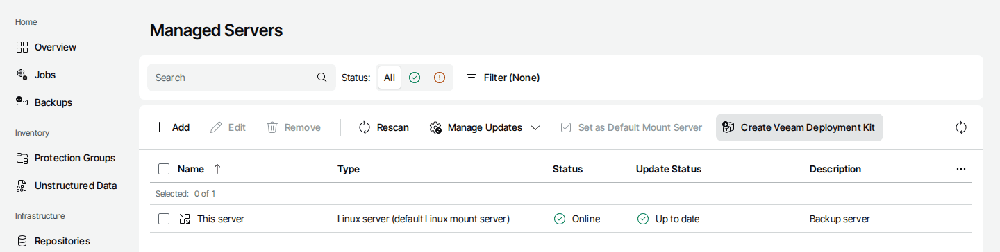
- Edge télécharge un fichier nommé
veeam-deployment-kit-<identifiant>.zip(environ 21 Mo) dans le dossier Téléchargements. Attendre la fin du téléchargement.
Le lien de téléchargement est à usage unique
Le kit est généré à la demande, et son lien ne sert qu'une fois. Dans le lab, un second téléchargement avec le même lien a donné une erreur « 404 Not Found ». Si le fichier n'arrive pas ou est perdu, cliquer de nouveau sur Create Veeam Deployment Kit pour en générer un nouveau.
Le kit contient des clés
Le zip contient des certificats et la clé privée du serveur. Une fois le kit installé (5.3), supprimer le zip et le dossier extrait, et ne jamais le partager.
5.3 Extraire et installer le kit¶
Le zip contient sept fichiers :
| Fichier | Rôle |
|---|---|
client-cert.pem |
Certificat que l'appliance présentera au serveur |
server-cert.pem, server-key.pem |
Certificat et clé privée du serveur |
VeeamInstallerSvc.msi |
Service d'installation Veeam (le service VeeamDeploySvc) |
OpenSSL_FIPS_Redistributable_3.1.2_x64.msi |
Bibliothèque de chiffrement conforme FIPS |
InstallDeploymentKit.bat |
Script qui installe le tout |
ReadMe.txt |
Instructions d'installation manuelle |
-
🪟 Ouvrir PowerShell en tant qu'administrateur et extraire le zip :
-
Lancer le script d'installation :
Le script termine avec ces lignes :
Installing Veeam Installer service
Importing certificates
Server certificate installed successfully
Client certificate installed successfully
Restarting Veeam Installer service
Un message en français à ignorer
Au début, le script peut afficher « Removing existing Veeam Installer service » suivi d'un message de Windows Installer en français (« Cette action est valide uniquement pour les produits déjà installés »). Il signifie seulement qu'il n'y avait rien à désinstaller : c'est normal lors d'une première installation.
-
Vérifier que le service tourne et que le pare-feu a été configuré :
Résultat attendu
Le service VeeamDeploySvc est en Running et des règles de pare-feu dont le nom contient « Veeam » sont activées. Le kit est installé.
-
Supprimer maintenant le zip et le dossier (voir l'encadré ci-dessus) :
6. Déclarer srv-fichiers comme serveur géré¶
Un serveur géré (managed server) est une machine que Veeam connaît, administre et peut utiliser (comme dépôt, proxy, serveur de montage…). L'interface web exige de déclarer d'abord la machine ici avant de pouvoir créer un dépôt dessus.
- 🌐 Dans l'interface web, ouvrir Infrastructure > Managed Servers, puis cliquer sur Add.
- Choisir Microsoft Windows.
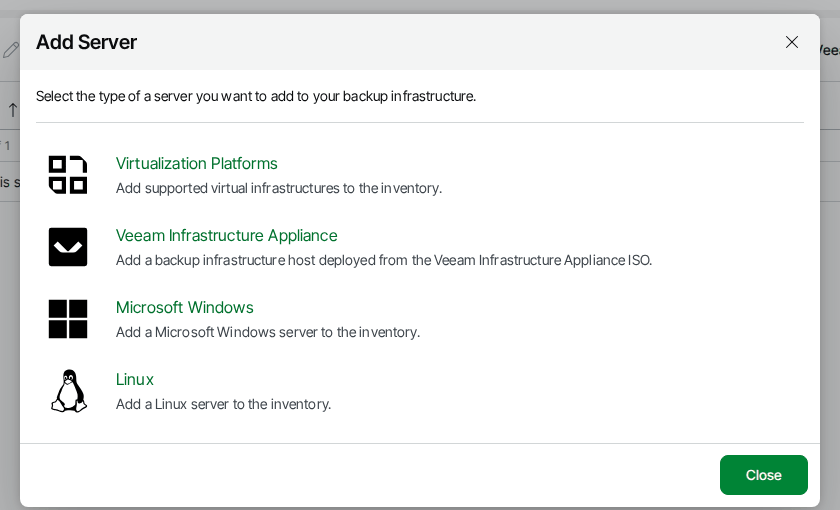
- Étape Name : saisir DNS name or IP address
192.168.19.22et Descriptionsrv-fichiers : serveur de fichiers Windows Server 2025, puis cliquer sur Next.
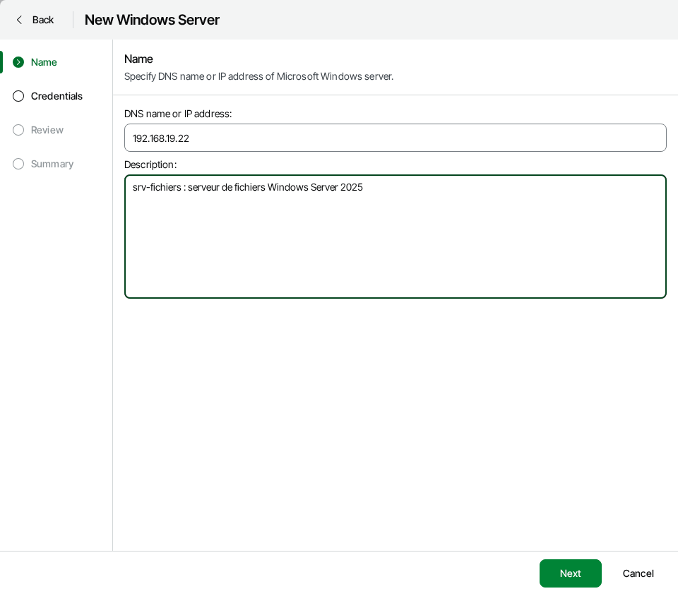
- Étape Credentials : sélectionner Connect using certificate-based authentication (« se connecter par certificat »), puis cliquer sur Next.
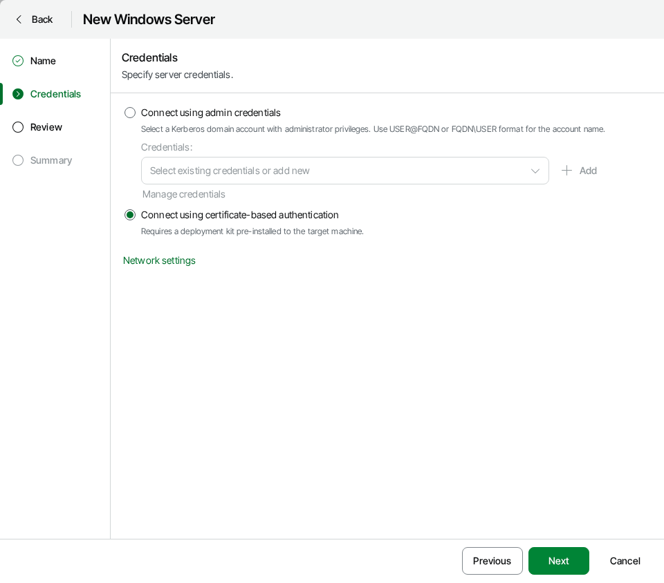
Si le kit n'est pas installé
Sans la section 5, l'assistant ne peut pas se connecter à srv-fichiers. Reprendre la section 5 avant de continuer. Ne pas choisir Connect using admin credentials : c'est le chemin qui échoue en section 3.
- Étape Review : Veeam liste les composants à installer sur le serveur. Cliquer sur Next.
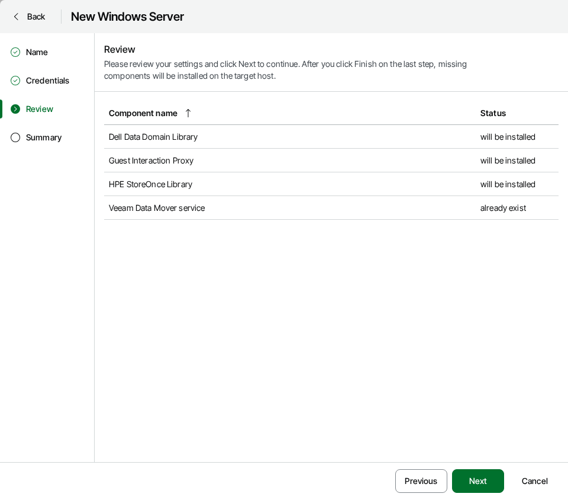
- Étape Summary : cliquer sur Finish. Les composants manquants s'installent sur
srv-fichiers. - Attendre une minute, puis recharger la page avec F5 :
192.168.19.22apparaît dans la liste.
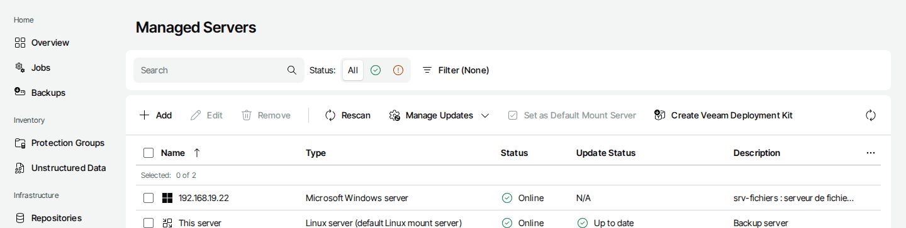
Ne pas relancer l'assistant
Comme pour les dépôts (voir 7.3), l'interface web termine la création en arrière-plan : la liste peut mettre un moment à se mettre à jour. Patienter et recharger la page avant de conclure que l'ajout a échoué.
7. Créer le dépôt n° 2 Depot-2-srv-fichiers¶
7.1 L'assistant pas à pas¶
- 🌐 Ouvrir Infrastructure > Repositories, cliquer sur Add, puis Microsoft Windows.
- Étape Name : saisir Name
Depot-2-srv-fichierset DescriptionDépôt n° 2 : disque F: (ReFS 64 Ko) du serveur de fichiers srv-fichiers, puis cliquer sur Next.
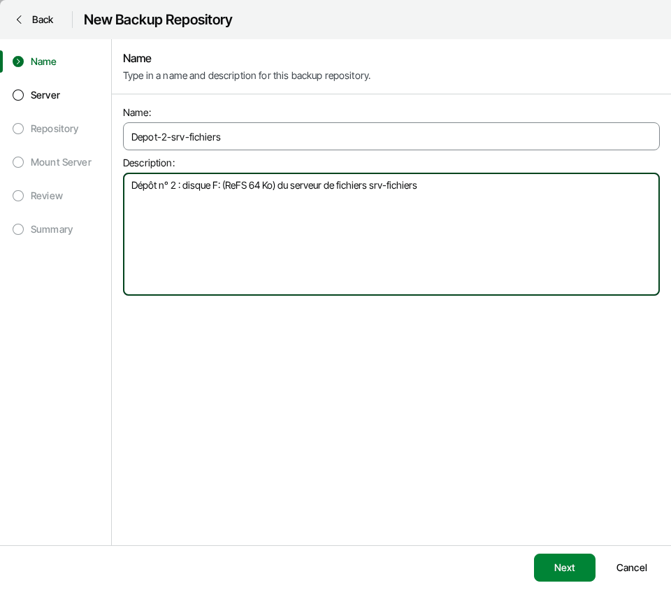
- Étape Server : dans la liste Repository server, choisir
192.168.19.22 (srv-fichiers : serveur de fichiers Windows Server 2025). Les volumes du serveur s'affichent :C:,E:etF:.
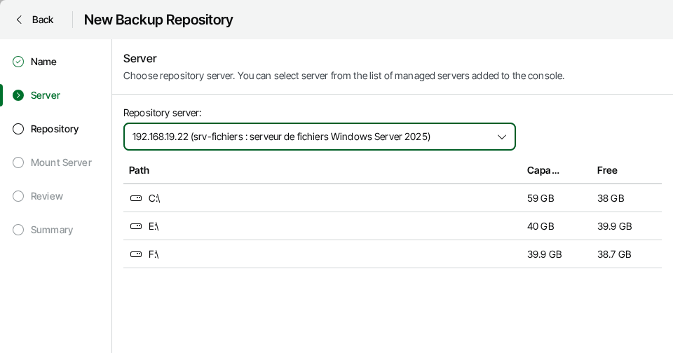
La liste « Repository server » est vide : « No options found »
La liste est vide, avec le message The field is required sous la zone, tant que le serveur n'est pas déclaré dans Managed Servers. Retourner à la section 6, puis relancer l'assistant.
- Cliquer sur Next. Étape Repository : dans Path to folder, saisir
F:\RepoVeeam, puis cliquer sur Populate. Veeam affiche la capacité (39,94 Go) et l'espace libre (38,67 Go). Laisser Limit maximum concurrent tasks to4, puis cliquer sur Next.
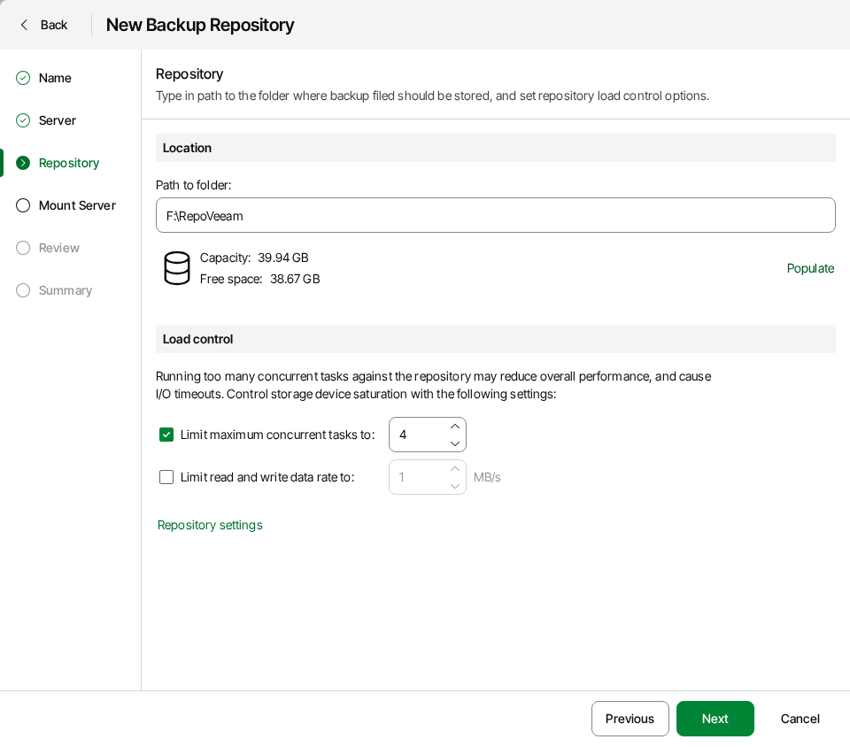
Pourquoi pas d'option d'immuabilité ?
Contrairement au dépôt de l'appliance, cet assistant n'offre aucune case d'immuabilité : un dépôt Windows en ReFS n'est pas durci. L'immuabilité vient d'un dépôt durci Linux ou d'un stockage objet. C'est une raison de plus de ne pas faire de ce dépôt la seule copie.
- Étape Mount Server : garder les valeurs proposées, Windows mount server
192.168.19.22 (srv-fichiers…)et Linux mount servervbr (Backup server), puis cliquer sur Next.
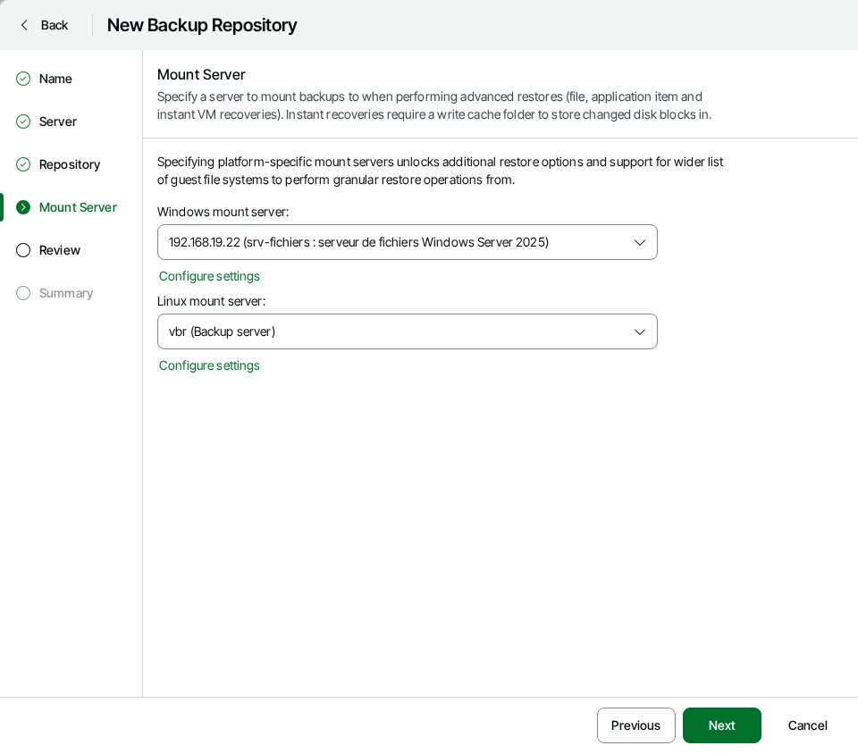
- Étape Review : Veeam liste les composants. Laisser Search the repository for existing backups and import them automatically décoché (le dépôt est vide), puis cliquer sur Next.
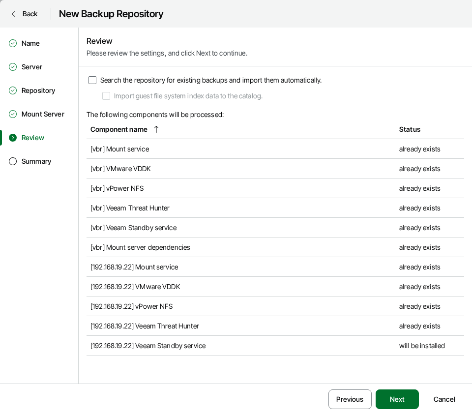
- Veeam applique alors les réglages (installation du composant manquant sur
srv-fichiers). Attendre la fin, cliquer sur Next pour afficher l'étape Summary, vérifier le récapitulatif, puis cliquer une seule fois sur Finish.
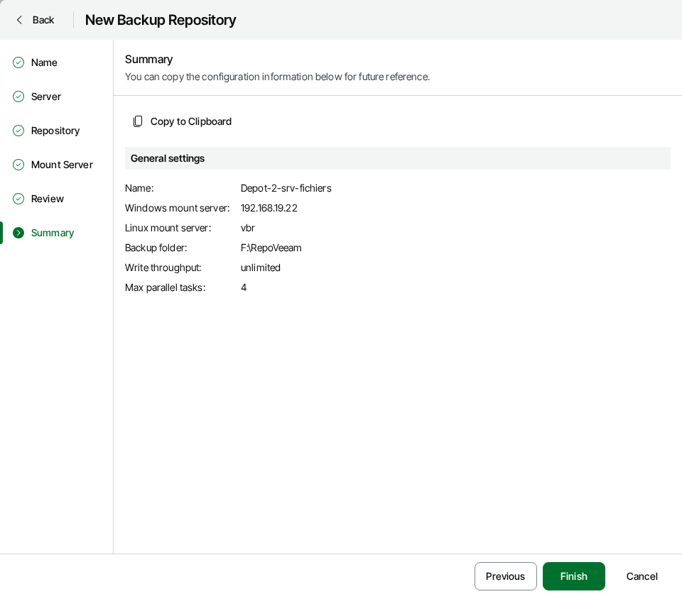
7.2 Si l'assistant avertit que le volume n'est pas en ReFS¶
Si le dossier se trouve sur un volume NTFS (c'est ce qui arrive si l'on choisit E: par erreur), Veeam affiche une fenêtre d'avertissement après l'étape Repository.
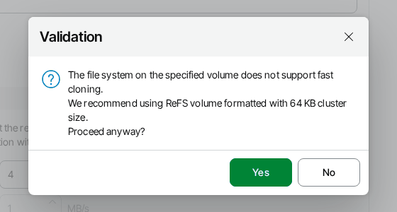
Message d'avertissement
The file system on the specified volume does not support fast cloning. We recommend using ReFS volume formatted with 64 KB cluster size. Proceed anyway?
Cliquer sur No, vérifier la lettre du lecteur saisie (F:) et le formatage (4.4), puis reprendre. Répondre Yes reste possible, mais le dépôt n'aura alors ni fast clone, ni les gains de temps et de place qui vont avec.
7.3 Le piège du doublon¶
Le dépôt n'apparaît pas dans la liste après « Finish » : ne pas relancer l'assistant
Après Finish, l'interface web 13.1 crée le dépôt en arrière-plan et ne rafraîchit pas la liste. Dans le lab, la liste est restée sur un seul dépôt plus d'une minute alors que le dépôt existait déjà ; le premier passage de l'assistant a donc été refait, ce qui a créé un deuxième dépôt du même nom (Depot-2-srv-fichiers en double).
À faire à la place :
- Patienter une à deux minutes.
- Cliquer sur la cloche Notifications et ouvrir Logs & Events : une session Infrastructure Item Saving au résultat Success indique que la création est terminée.
- Recharger la page avec F5, plusieurs fois si nécessaire.
Si un doublon a déjà été créé : cocher l'un des deux dépôts (tous deux sont vides, 0 B utilisés, tant qu'aucun job ne les utilise) et cliquer sur Remove. Dans le lab, le doublon a été retiré par l'API de Veeam ; la suppression par le bouton Remove n'a pas été rejouée. Ne jamais supprimer un dépôt qui contient des sauvegardes sans savoir ce que l'on fait.
8. Vérification¶
- 🌐 Recharger Infrastructure > Repositories : deux dépôts sont listés.
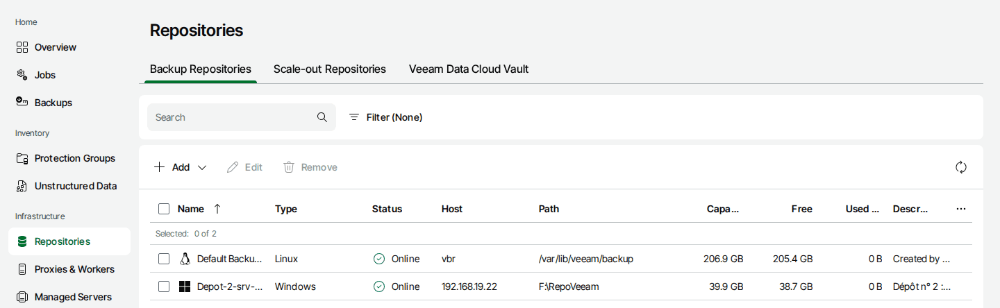
-
🪟 Sur
srv-fichiers, vérifier le volume et le dossier :
Résultat attendu
- Deux dépôts sont Online :
Default Backup Repository(Linux,vbr,/var/lib/veeam/backup, 206,9 Go) etDepot-2-srv-fichiers(Windows,192.168.19.22,F:\RepoVeeam, environ 39,9 Go, 38,7 Go libres). - Aucun doublon : un seul
Depot-2-srv-fichiers. F:est en ReFS, avec une unité d'allocation de 65536, etTest-PathrépondTrue.
🛟 Prendre l'instantané 02-depots¶
Le lab est dans un état propre, qu'il vaut mieux figer avant la partie 5.
- 🪟 Éteindre
srv-fichiersproprement, puis éteindrevbret les autres machines du lab (voir Instantanés conseillés). - 🖥️ Prendre un instantané nommé
02-depotssur toutes les machines du lab en même temps. - Rallumer les machines (
pfsense-19d'abord, puisvbr, puissrv-fichiers).
Un instantané n'est pas une sauvegarde
Il reste sur le disque du PC hôte. Il sert à recommencer la partie 5 en quelques secondes, pas à protéger des données.
9. Questions de révision¶
- Citer trois types de dépôts de sauvegarde que Veeam sait utiliser.
- Pourquoi un dépôt sur un partage SMB a-t-il besoin d'un serveur passerelle, alors qu'un dépôt Windows à disque local n'en a pas besoin ?
- Quel est le rôle de l'option « Prevent accidental deletion for 7 days » du dépôt par défaut de l'appliance ?
- Pourquoi le lab ne peut-il pas créer le dépôt sur un partage SMB de
srv-fichiersaccessible par son adresse IP ? - À quoi sert le kit de déploiement Veeam ? Pourquoi son lien de téléchargement doit-il être utilisé immédiatement ?
- Pourquoi formater
F:en ReFS avec des clusters de 64 Ko ? - Après avoir cliqué sur Finish, le nouveau dépôt n'apparaît pas dans la liste. Que faire, et quelle erreur éviter ?
Corrigé
- Au choix : dépôt Windows ou Linux à disque local, dépôt durci Linux, partage réseau SMB ou NFS, stockage objet (Amazon S3, Azure Blob), appliance de déduplication.
- Un partage SMB ne peut pas exécuter le Data Mover : il faut une passerelle qui l'exécute à sa place. Sur un serveur Windows à disque local, le Data Mover tourne sur le serveur lui-même.
- À rendre les fichiers de sauvegarde immuables pendant 7 jours : ils ne peuvent ni être modifiés ni être supprimés, même par un administrateur. Cela protège contre un rançongiciel ou un compte administrateur volé.
- L'appliance est durcie (mode FIPS) et
srv-fichiersest en groupe de travail. Par adresse IP, Kerberos n'est pas utilisable (un FQDN est exigé) ; avec un compte local, NTLM échoue (NT_STATUS_INVALID_PARAMETER). Un domaine Active Directory résoudrait le problème. - Il installe sur le serveur Windows un service Veeam et des certificats, ce qui permet l'authentification par certificat sans mot de passe ni domaine. Le lien est à usage unique : un second téléchargement renvoie une erreur 404 ; il faut régénérer le kit.
- Pour activer le clonage de blocs (fast clone) : les sauvegardes complètes synthétiques référencent des blocs existants au lieu de les recopier, ce qui économise temps et espace. Veeam recommande des clusters de 64 Ko et avertit si le volume est en NTFS.
- Patienter, consulter les notifications et Logs & Events (session Infrastructure Item Saving), puis recharger la page. Ne pas relancer l'assistant : cela crée un doublon, qu'il faudrait supprimer.
Ressources¶
- Backup Repositories — types de dépôts, guide officiel de Veeam Backup & Replication 13 (en anglais).
- Hardened Repository — dépôt durci et immuabilité.
- Using Veeam Deployment Kit — kit de déploiement et authentification par certificat.
- Fast Clone — clonage de blocs sur XFS et ReFS.
- Gateway Servers et Mount Servers — rôles de la passerelle et du serveur de montage.
- Block cloning sur ReFS — documentation Microsoft.
- Partie précédente : Préparer le lab et installer l'appliance · Partie suivante : Sauvegarder la configuration et un serveur de fichiers.